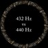

<html lang="en">
 <head>
<!-- Favicon -->
<link rel="shortcut icon" href="../../favicon.ico">
  <meta charset="utf-8"/>
  <title>
   A very convincing argument for 432hz. No new age hippie bullshit.
  </title>
  <meta content="Post on /v/Conspiracy from 2017-04-23 by rail606." name="description"/>
  <meta content="A very convincing argument for 432hz. No new age hippie bullshit." property="og:title"/>
  <meta content="Post on /v/Conspiracy from 2017-04-23 by rail606." property="og:description"/>
  <link href="../../static/css/page.css" rel="stylesheet"/>
  <meta content="https://voat.conspiracy.hackliberty.org/thumbnails/88/5a/885a6e96-f6ce-47e7-8dd5-7201be60cf52.jpg" property="og:image"/>
  <meta content="https://voat.conspiracy.hackliberty.org/v/conspiracy/1812268.html" property="og:url"/>
  <meta content="width=device-width, initial-scale=1" name="viewport"/>
  <link href="https://voat.conspiracy.hackliberty.org/v/conspiracy/1812268.html" rel="canonical"/>
  <meta content="article" property="og:type"/>
  <meta content="Voat /v/Conspiracy Archive" property="og:site_name"/>
  <meta content="en_US" property="og:locale"/>
  <meta content="summary_large_image" name="twitter:card"/>
  <meta content="A very convincing argument for 432hz. No new age hippie bullshit." name="twitter:title"/>
  <meta content="Post on /v/Conspiracy from 2017-04-23 by rail606." name="twitter:description"/>
  <meta content="https://voat.conspiracy.hackliberty.org/thumbnails/88/5a/885a6e96-f6ce-47e7-8dd5-7201be60cf52.jpg" name="twitter:image"/>
 </head>
</html>
<body class="dark">
 <div id="container">
  <!-- array (
  'submissionid' => 1812268,
  'creationDate' => '2017-04-23 02:14:36',
  'domain' => 'soundofgoldenlight.com',
  'formattedContent' => NULL,
  'isAdult' => 0,
  'isAnonymized' => 0,
  'subverse' => 'Conspiracy',
  'thumbnail' => '885a6e96-f6ce-47e7-8dd5-7201be60cf52.jpg',
  'title' => 'A very convincing argument for 432hz. No new age hippie bullshit.',
  'url' => 'http://soundofgoldenlight.com/432-hz/',
  'userName' => 'rail606',
  'archivedLink' => NULL,
  'archivedDomain' => NULL,
  'isDeleted' => 0,
) -->
  <div style="text-align:center; font-size:24px; font-weight:bold;">
   <a href="../../index.html" style="text-decoration: none; color: inherit;">
    Voat /v/Conspiracy Archive
   </a>
  </div>
  <div class="content" role="main">
   <div class="sitetable linklisting" id="siteTable">
    <div class="submission id-1812268 link type-text" id="submission-1812268">
     <a name="submissionTop">
     </a>
     <p class="parent">
     </p>
     <a class="thumbnail may-blank" href="http://soundofgoldenlight.com/432-hz/" target="_self">
      
     </a>
     <div class="entry unvoted">
      <p class="title">
       <a class="title may-blank" href="http://soundofgoldenlight.com/432-hz/" tabindex="1" target="_self" title="A very convincing argument for 432hz. No new age hippie bullshit.">
        A very convincing argument for 432hz. No new age hippie bullshit.
       </a>
       <span class="domain">
        (
        <a href="https://archive.searchvoat.co/search.php?d=soundofgoldenlight.com">
         soundofgoldenlight.com
        </a>
        )
       </span>
      </p>
      <p class="tagline">
       submitted
       <time datetime="2017-04-23T02:14:36+00:00" title="04/23/2017 2:14:36 AM">
        2017-04-23T02:14
       </time>
       by
       <span class="userattrs">
        <a class="author may-blank" href="https://archive.searchvoat.co/search.php?u=rail606">
         rail606
        </a>
       </span>
      </p>
      <ul class="flat-list buttons">
       <li class="first">
        <a class="comments may-blank" href="https://archive.searchvoat.co/v/Conspiracy/1812268" rel="nofollow">
         1 comment
        </a>
       </li>
      </ul>
     </div>
     <div class="child">
     </div>
     <div class="clearleft">
     </div>
    </div>
    <div class="clearleft">
    </div>
   </div>
   <div class="horizontal-line">
   </div>
   <div class="commentarea">
    <div class="sitetable nestedlisting" id="siteTable">
     <div class="child id-8871075 comment even" style="">
      <div class="entry unvoted">
       <div class="noncollapsed" id="8871075" style=";">
        <p class="tagline">
         <a class="author may-blank" href="https://archive.searchvoat.co/search.php?u=rail606">
          rail606
         </a>
         <span class="userattrs">
         </span>
         <time datetime="2017-04-23T02:15:53+00:00" title="4/23/2017 2:15:53 AM">
          2017-04-23T02:15
         </time>
        </p>
        <div class="usertext-body may-blank-within" id="commentContent-8871075">
         <div class="md">
          <p>
           <p>
            <a href="https://www.youtube.com/channel/UCnhxVo_73kWJI7DwrI1clPQ">
             Check out my youtube channel. 700+ songs uploaded in 432hz in the last 4 months!
            </a>
            Tons of EDM. Tons of genres.
           </p>
           <h2>
            How to tune your tracks to 432hz using the change speed effect in Audacity which can be downloaded here:
            <a href="http://www.audacityteam.org/">
             http://www.audacityteam.org/
            </a>
           </h2>
           <ol>
            <li>
             <p>
              First import the track into audacity by dragging your MP3 file from your music folder into the audacity app. Or alternately go to File / Import / Audio File and select your MP3.
             </p>
            </li>
            <li>
             <p>
              Lower the volume of the track using the amplify effect to prevent clipping(I use -.1 increments a few times to find a sweet spot.)
             </p>
            </li>
            <li>
             <p>
              Then I apply the change speed effect by -1.818% to the track. This will amplify the song which is why I lowered the volume before I did it.
             </p>
            </li>
            <li>
             <p>
              Listen to the loud parts to make sure nothing clips(goes over 0-DB or into the red on your bars.)
             </p>
            </li>
            <li>
             <p>
              If everything sounds heavenly then go to File/Export. That is it!
             </p>
            </li>
           </ol>
           <h2>
            Explanation of This Conversion Method
           </h2>
           <h2>
            Standard 440hz       |      Scientific 432hz
           </h2>
           <p>
            A4 440hz     x 98.182%  = 432hz A4
           </p>
           <p>
            G4 392hz     x 98.182%  = 384.87hz G4
           </p>
           <p>
            A3 220hz     x 98.182%  = 216hz A3
           </p>
           <p>
            A2 110hz     x 98.182%  = 108hz A2
           </p>
           <p>
            Check here to see if it matches up:
            <a href="http://www.phy.mtu.edu/">
             http://www.phy.mtu.edu/
            </a>
            ~suits/notefreq432.html
           </p>
           <p>
            Slowing the track down effects all of the frequencies. If the frequency is 110hz and you slow it down by 1.818% then its cycle will reduce down to 108hz and so on and so forth. There is also no loss of quality here because you are not pitch shifting. There are new frequencies being added across the entire range. New spacing between chords. This is why the track gets louder after you slow it down and why you have to lower the volume first to avoid clipping.
           </p>
          </p>
         </div>
        </div>
        <ul class="flat-list buttons">
         <li class="first">
          <a class="bylink" href="https://archive.searchvoat.co/v/Conspiracy/1812268/8871075" rel="nofollow">
           link
          </a>
         </li>
        </ul>
       </div>
      </div>
     </div>
    </div>
   </div>
  </div>
 </div>
<!-- Footer Section -->
<footer class="container-fluid mt-3">
  <p class="small mb-0">
    /v/conspiracy archive has 42504 posts and 159856 total comments.
    <a href="https://git.hackliberty.org/c0mmando/voat-conspiracy-archive/">source code</a>.
  </p>
</footer>

<script src="../../static/js/jquery-3.7.1.slim.min.js"></script>
<script src="../../static/js/comments-toggle.js"></script>

</body>
